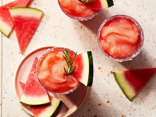

Rosemary Margarita

This is a cocktail riff on a lemonade recipe we love (armagazine.com/rosemary-infused-watermelon-lemonade).
The herb-melon combo is delicious, and watermelon's natural sweetness keeps added sugar low.
Ingredients
- 1 cup water
- 1.5 teaspoons chopped fresh rosemary
- 6 cups cubed seeded watermelon
Steps to make
- Crush the watermelon and mix it with the water
- Add in the sugar and mix well
- Finally, add the rosemary into the mix
- Mix well and enjoy :)
Back to Home